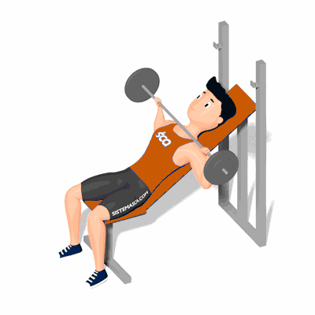

Supino Inclinado com Barra

Exercício para fortalecimento e hipertrofia da região peitoral, com enfoque nos músculos peitoral maior e menor, músculos auxiliares deltoides. Realiza com barra em uma prancha inclinada. Utilizado para moldar a parte superior dos peitorais. Indicado a praticante de musculação nível iniciante e intermediário.
Ficha Técnica
Tipo: Musculação
Grupo Muscular: Peito
Aparelho: Nenhum
Músculos: Nenhum
Como realizar
- Posicione as pernas no suporte do banco inclinado o e deite sobre ele;
- As costas bem estabilizadas no banco, pegue a barra a uma distância maior do que a dos ombros;
- Levante o peso do suporte na linha do peitoral com os cotovelos estendidos;
- Manter os punhos retos, desça a barra de maneira controlada e, ao mesmo tempo, realize a flexão dos cotovelos para baixo;
- Empurre a barra para cima concentrando a força nos músculos do peito;
- Repita os movimentos, conforme o número de repetições orientado pelo professor.
 RC STORE
RC STORE